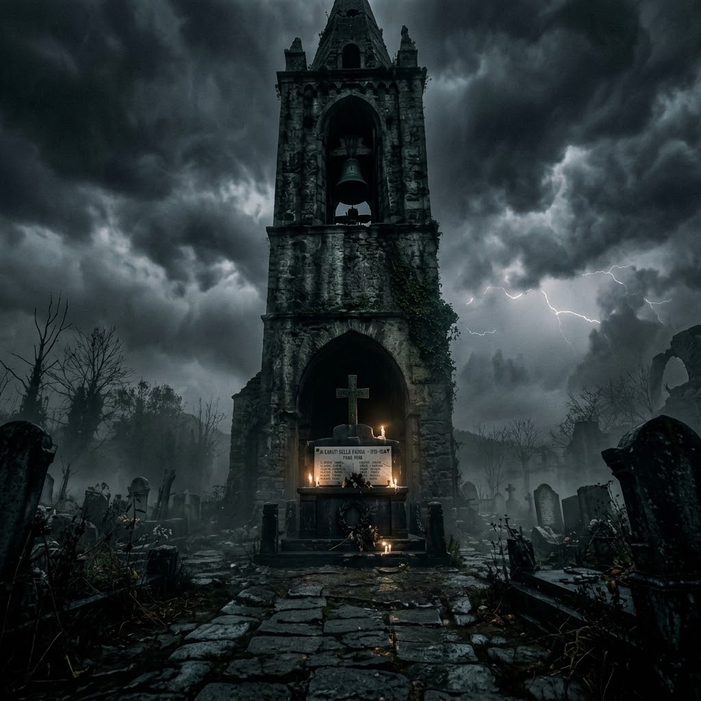
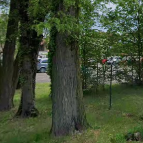
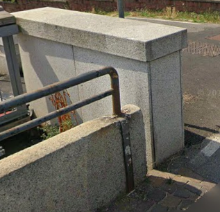
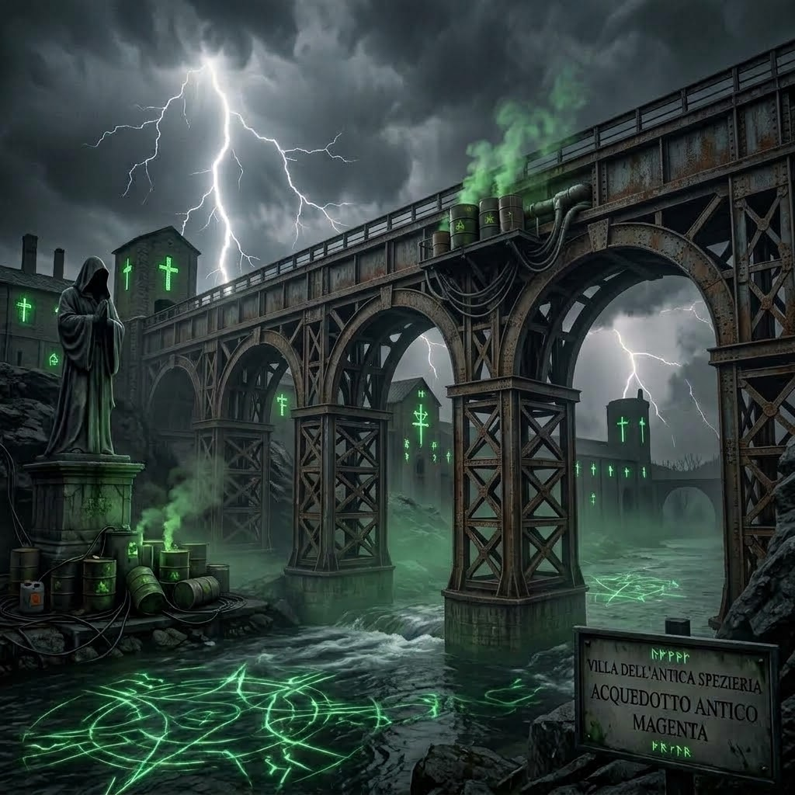
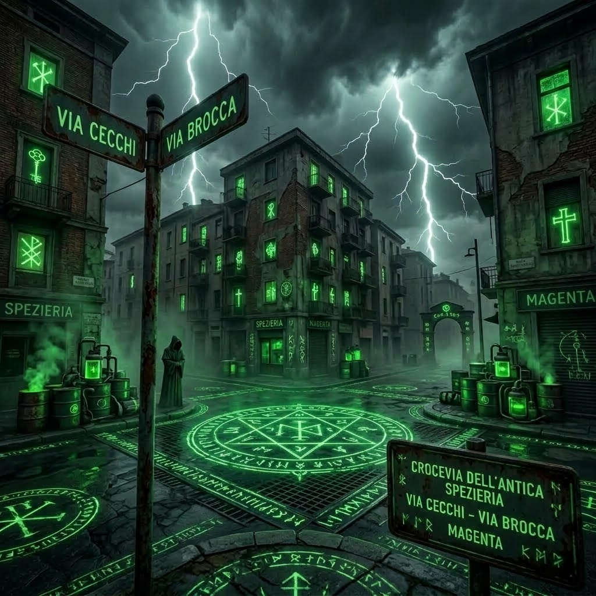
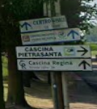
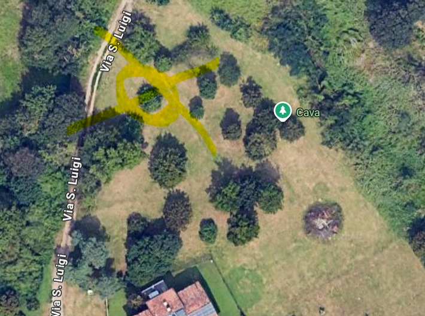

"Decifrate gli enigmi per scoprire dove vi condurrà la notte..."
📷 INQUADRA IL QR CODE
📡 RILEVATORE ANIME PERDUTE
Ruota fisicamente su te stesso per individuare le presenze
DISTANZA: -- m
Scansione frequenze...
🩸 Punto di Partenza
🕯️ Benvenuti all'Escape Night: "Siete pronti a spezzare i sigilli dell'Ombra?
Premete il pulsante qua sotto per andare alla prima tappa!"
🩸 0. Il Risveglio delle Ombre

🕯️ Enigma Toponomastico: "Alzate lo sguardo verso l'alta torre di pietra dove il bronzo scandisce le ore nel buio della piazza.
Scovate la pietra del ricordo sotto la torre per spezzare il primo codice!"
oppure inserisci il codice trovato:
🩸 I. La Fonte Gelida
🕯️ Enigma Toponomastico: "Dove la fonte pura sgorga senza sosta per dissetare i viandanti. Trovate la casetta di pietra dove il secondo sigillo è custodito."
oppure inserisci il codice trovato:
🩸 II. Il Rifugio della Guarigione
🕯️ Enigma Toponomastico: "La croce veglia sugli ammalati: cercate il sigillo dove si trova la pozione per la cura."
oppure inserisci il codice trovato:
🩸 III. Il Giardino della Battaglia

🕯️ Enigma Toponomastico: "Sul retro della nobile Villa Castiglioni. Trovate l'anno dello storico scontro del paese."
oppure inserisci il codice trovato:
🩸 IV. Il Passaggio di Roccia

🕯️ Enigma Toponomastico: "Sotto solide arcate di pietra che uniscono le due sponde del grande Naviglio."
oppure inserisci il codice trovato:
🩸 V. Lo Scavalcavia Metallico

🕯️ Enigma Toponomastico: "Fredde travi di metallo sospese sulle acque del Naviglio. Trovate il sigillo inciso d'acciaio."
oppure inserisci il codice trovato:
🩸 VI. Il Bivio delle Due Vie

🕯️ Enigma Toponomastico: "Incrocio tra Via Cecchi e Via Brocca. Forma il codice con la posizione alfabetica delle due lettere (C=3, B=2)."
oppure inserisci il codice trovato:
🩸 VII. Il Corso del Ruscello

🕯️ Enigma Toponomastico: "Lungo le sponde del canale Sturgin dove i giovani sfidavano la corrente."
oppure inserisci il codice trovato:
🩸 VIII. Lo Sterrato della Cava

🕯️ Enigma Toponomastico: "Sentiero sterrato del parco dove un tempo si scavava la terra. Tra gli alberi vi attende l'ultimo Guardiano!"